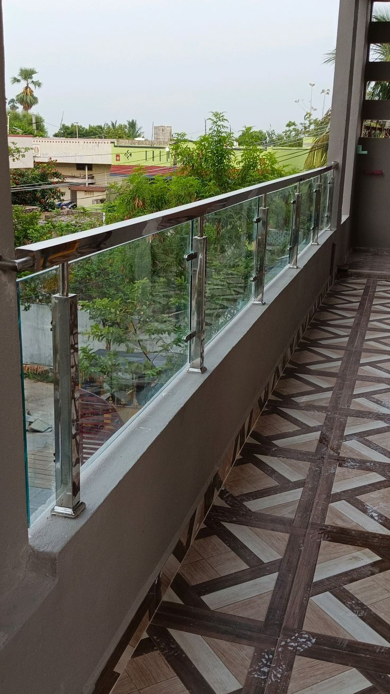

GlassStudio · Madhapur, Hyderabad
Glass Doors & Partitions in Madhapur
Glass doors, office cabins and partitions for offices, cafes, showrooms and homes in Madhapur, Ayyappa Society and Kavuri Hills.
Glass doors and partitions for Madhapur offices, cafes and homes
Madhapur has a mix of small and mid-size offices, startups, cafes, restaurants and showrooms, along with apartments in Ayyappa Society and Kavuri Hills. Most of these spaces need the same two things from glass: doors that look clean and work smoothly, and partitions that divide the space without making it feel closed.
GlassStudio measures on site, suggests the right glass and hardware, and installs glass doors and partitions for commercial and residential spaces across Madhapur.
- Frameless and framed glass doors
- Office cabins and meeting rooms
- Shop and cafe entrances
- Sliding doors for homes
Glass doors in Madhapur
- Frameless toughened glass doors with patch fittings and floor springs for office and shop entrances
- Sliding glass doors for offices, cafes and balconies
- Telescopic sliding doors for wide openings in homes
- Pivot doors for a modern look
- Glass doors for partitions and cabins
Glass partitions in Madhapur
- Office glass partitions for cabins, meeting rooms and team areas
- Aluminium profile partitions in slim black or silver frames
- Fluted and frosted glass for privacy
- Home partitions between living and dining areas
Localities we serve around Madhapur
Madhapur, Ayyappa Society, Kavuri Hills, Jubilee Enclave, Image Gardens Road, Durgam Cheruvu, Inorbit Mall Road and Hitech City Road.
Frequently asked questions
Do you install glass doors for shops and cafes in Madhapur?
Yes. We install frameless and sliding glass entrances for shops, cafes, restaurants and showrooms.
Can you make a glass cabin in an existing office?
Yes. We measure the space and install glass partitions and doors to create cabins or meeting rooms.
Book a site visit in Madhapur
Send rough sizes or site photos on WhatsApp for an estimate, or call +91 92664 72817.